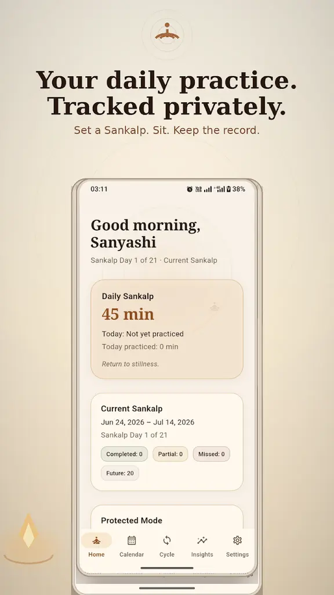
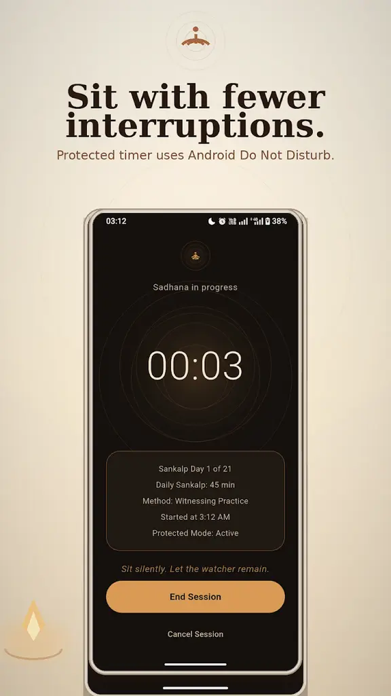
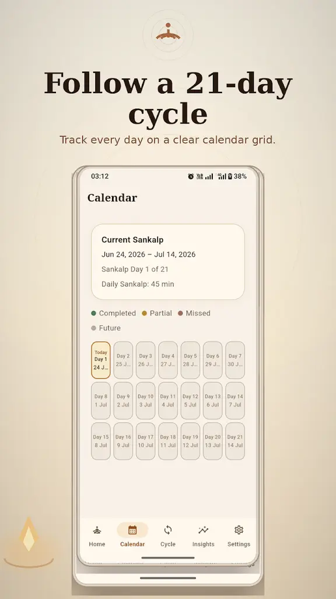
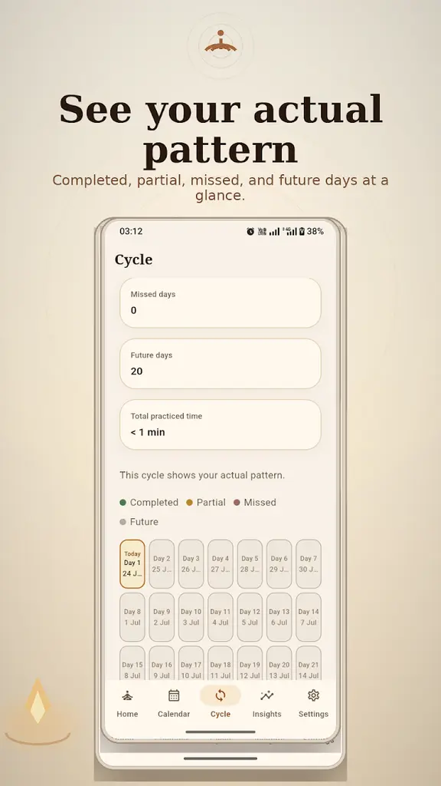
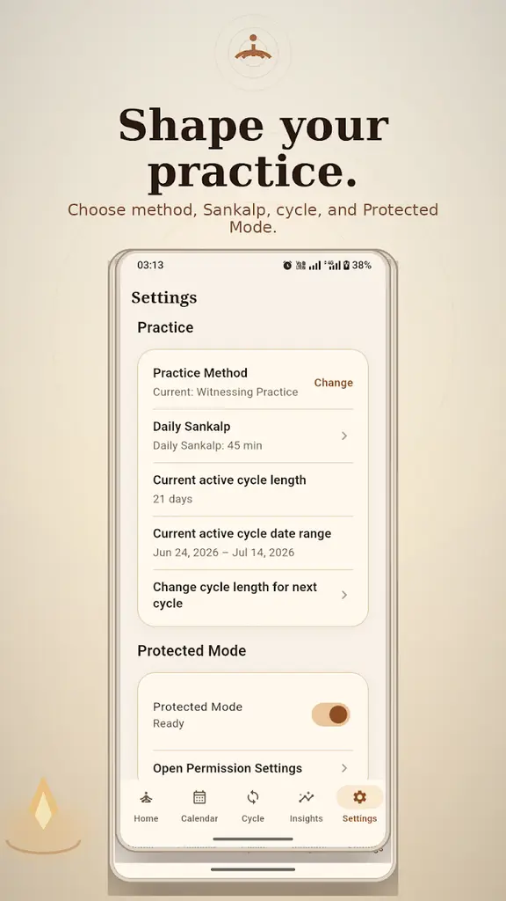
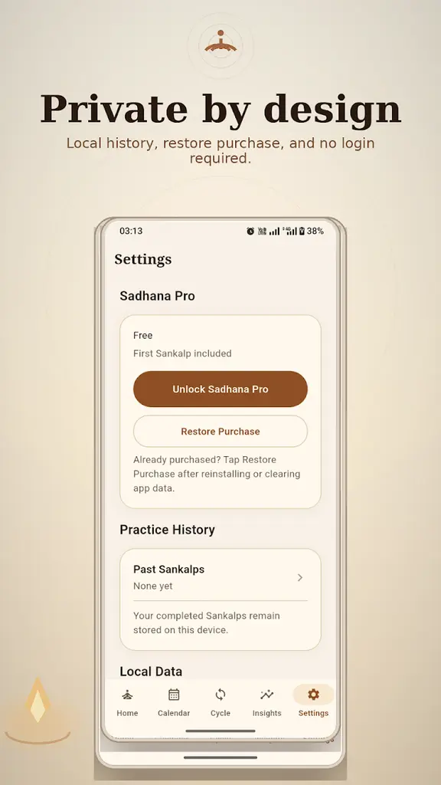

Make a Sankalp
Choose your practice method, daily duration and a focused 7-day or 21-day cycle. Your Sankalp becomes the commitment you return to each day. A defined cycle keeps the promise concrete and gives you a natural point to review it.
Set a daily Sankalp, sit with a calm timer, and see your 7-day or 21-day practice take shape. Sadhana Tracker gives an independent meditation, mantra or mindfulness practice a clear, private structure—without turning it into another feed.
No login · No ads · No analytics · No subscription



Why Sadhana Tracker
If you already know how you want to practise, you may not need a library of guided sessions, recommendations or community features. You need a quiet way to make a commitment, sit regularly and keep an honest record.
Sadhana Tracker is built for people maintaining their own meditation, mantra, mindfulness, yoga or spiritual practice. It does not teach a method or tell you what to believe. It simply helps you return to the practice you chose.
That distinction keeps the app useful after the novelty of a new download has passed. There are no lessons to finish or social milestones to perform. The value comes from seeing a clear daily commitment beside the record of what you genuinely completed.
How it works
Choose your practice method, daily duration and a focused 7-day or 21-day cycle. Your Sankalp becomes the commitment you return to each day. A defined cycle keeps the promise concrete and gives you a natural point to review it.
Begin a calm, uncluttered session. Optional Protected Mode can use Android Do Not Disturb access, when you permit it, to help reduce interruptions. The interface keeps attention on the sit, not on menus, rewards or content recommendations.
See completed, partial and missed days on the calendar. When a cycle ends, preserve it in Past Sankalps and understand the practice as it actually happened. Imperfect days remain part of the record, making the result more useful than a polished streak.
Features and screenshots
Choose a defined beginning and end instead of chasing an endless public streak.
Sit with a quiet interface and optional Android Do Not Disturb support.
See completed, partial, missed and upcoming days in one clear practice record.
Revisit completed cycles and view lifetime sessions, days and practice time.



Swipe or scroll to explore the app screens.
Private by design
Sadhana Tracker works without an account, advertising SDKs or analytics. Your Sankalps and practice history are stored locally, with no developer-operated cloud synchronization.
Clearing app data or uninstalling the app may remove local history. Keep your device secured with your preferred Android settings.
Read the privacy policyFree and Sadhana Pro
Download the app and complete one full 7-day or 21-day Sankalp. If the structure supports your practice, Sadhana Pro unlocks unlimited future Sankalps with one optional purchase. There is no recurring plan to manage, and an eligible purchase can be restored through the same Google Play account.
Frequently asked questions
A Sankalp is a personal intention or commitment to maintain a chosen practice. In the app, it defines your daily goal and 7-day or 21-day cycle.
No. Sadhana Tracker does not provide guided sessions, courses or a content library. It supports an independent practice you already follow.
You can use it for silent meditation, mantra, mindfulness, breath awareness, yoga-related practice or another independent personal discipline.
No. Pro is an optional one-time Google Play purchase that unlocks unlimited future Sankalps.
Your Sankalps and practice history are stored locally inside the app on your Android device. The app does not synchronize them to a developer-operated cloud server.
Uninstalling the app or clearing its data may remove local history. A previous Pro purchase can be restored through Google Play.
When you grant permission, Protected Mode uses Android Do Not Disturb access to help reduce interruptions during a session. Behaviour depends on your device and system settings; the app does not read notification content.
Begin quietly